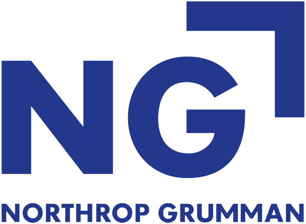
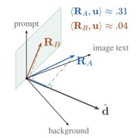
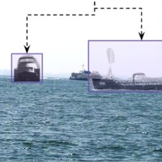
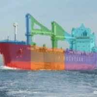
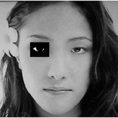
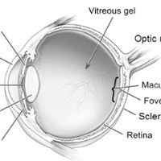
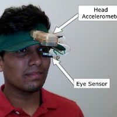

I'm a senior ML research engineer with 10+ years of experience in deep learning research and deployment. At Johns Hopkins APL, I work on maritime perception, studying everything from what vision models actually learn about ships to generating synthetic training data and evaluating vision–language models on real-world tasks.
Previously, I worked on deep learning for SAR target recognition at Northrop Grumman. I've also been doing a Ph.D. on top of the full-time job (defending spring 2027), mostly so I'd fit in with all the Ph.D.s at APL :P
When I'm not working: tennis, anime, metal, cooking, and black coffee.
Industry Experience
-
Johns Hopkins Applied Physics Laboratory2019 – presentSenior Machine Learning EngineerPerception research and engineering for autonomous maritime systems: multi-modal detection, classification, and segmentation across EO/IR, sonar, and hyperspectral imagery, taken from data pipelines to real-time C++/TensorRT deployment on edge hardware. More recently, vision–language models for vessel recognition, and methods for measuring what perception models rely on and how well they hold up under distribution shift.
-

Northrop Grumman2017 – 2019Machine Learning EngineerLed the team's AI/ML initiative, replacing classical computer vision with its first deep learning-based automatic target recognition for synthetic-aperture radar (SAR) imagery, built from scratch back when deep learning frameworks were still in their infancy. Also mentored engineers and interns on ML-focused projects. (Years later, a former coworker told me the team was still saving model weights as.faisalfiles 😂) -
TD Ameritrade2016Software EngineerSummer intern on the mobile engineering team in Jersey City. Built a Node.js HTTP proxy mock server that accelerated Android app testing, and delivered a tvOS application prototype integrating live trading-account and market data from the company's API.
Publications
-

Shift–Reliance Alignment: Ranking Vision–Language Models by the Cues They Trust
F. Mohammad, M. Younis • [PDF]
arXiv preprint, 2026 -

SEALECT: Scene-Conditioned Pose Priors for Plausible Maritime Vessel Retrieval
F. Mohammad, M. Younis • [Code]
WACV, 2027 -

HullProbe: Measuring Interventional Part Reliance in Maritime Vessel Classifiers
F. Mohammad, M. Younis • [Code] [PDF]
WACV, 2027 -

Drowsy driver mobile application: Development of a novel scleral-area detection method
F. Mohammad, K. Mahadas, G. K. Hung
Computers in Biology and Medicine, 2017 -

Eye growth and myopia development: Unifying theory and Matlab model
G. K. Hung, K. Mahadas, F. Mohammad
Computers in Biology and Medicine, 2016 -

Timing differences in eye–hand coordination between experienced and inexperienced tennis players
K. Mahadas, F. Mohammad, H. Samim, S. Jannapureddy, G. K. Hung, K. J. Ciuffreda
Optometry & Visual Performance, 2015
Earlier work in ocular mechanics, from undergraduate research with Dr. George Shoane at Rutgers University.
Education
- Ph.D., Computer Science, University of Maryland, Baltimore County
- M.S., Electrical and Computer Engineering, Rutgers University–New Brunswick
- B.A., Physics, Rutgers University–New Brunswick
Tools
Python, C++, PyTorch, Hugging Face, CUDA, TensorRT, ONNX, OpenCV, quantization (INT8/FP8), multi-GPU training (DDP/FSDP), NVIDIA Jetson, Docker, Linux